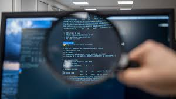

¡Los 7 Programadores Más Importantes de la Historia!
Hoy hemos recopilado siete de ellos. Algunos de ellos siguen con vida, otros ya no están entre nosotros, pero su invaluable legado es la base de muchísimas tecnologías, y revolucionaron para siempre la manera en que el funciona el mundo.

1. Ada Lovelace: La primera programadora
Ada Lovelace tradujo del francés al inglés el manual de la famosa máquina analítica de Charles Babbage,
y agregó unas notas en las que planteaba la idea de una máquina universal programable (en un tiempo que
no existían los lenguajes de programación).
En sus notas escribió algoritmos, definiendo las subrutinas, las condicionales y los bucles recursivos
para calcular los números de Bernoulli, todo en papel.
La máquina analítica nunca se construyó, por lo que los algoritmos de Ada Lovelace se quedaron plasmados
en papel. Pero más adelante se construyó, y funcionaban.
2. Grace Hopper: El primer compilador de la historia
Pero Ada Lovelace no fue la única, porque un siglo después de su muerte, es creado el primer compilador (es decir, un programa que traduce lenguaje de programación, a lenguaje de máquina o binario) y lo hizo también una mujer.
Creo el primer manual de programador
Remontémonos a los años 40, cuando el mundo de la programación apenas comenzaba. Si, la época en la que las computadoras no cabían en la palma de tu mano como ahora, sino que se encontraban en universidades, y eran extensas maquinarias con varias toneladas de peso.Además, con su equipo se popularizó el término bug, porque encontraron una polilla que bloqueaba el funcionamiento de la Mark II ¡Lee la historia completa en este blog!
3. Dennis Ritchie: El creador de UNIX y del lenguaje C
Si Ada Lovelace escribió el primer programa, y Grace Hopper escribió el primer compilador, el siguiente programador
diseñó el primer sistema operativo de la historia.
Dennis Ritchie decía que él no era lo suficientemente inteligente para ser físico o matemático (sí lo era),
pero le gustaba la programación. Por eso en 1967 abandonó su postgrado de Matemáticas Aplicadas en Harvard para
entrar en los legendarios Laboratorios Bell (que son como la cuna de Silicon Valley, tal como te contamos en este video).
Creo el sistema operativo UNIX
Al poco tiempo de entrar a los Bell Labs en la década de los 60, en esos tiempos cuando aún las computadoras no tenían un sistema operativo interoperable (no se podía trasladar la arquitectura entre varias computadoras, ni pasar los mismos programas), le asignaron trabajar junto a Ken Thompson en el desarrollo del Sistema Operativo MULTICS, pero este S.O. les resultó demasiado complicado, y muy pesado.
Creo el legnuaje C de programacion
Para estar a la altura del nuevo sistema UNIX que había sido escrito en código ensamblador, entre 1969 y 1973 Ken
Thompson creó el lenguaje B, pero necesitaba muchas mejoras.
Más adelante, B fue reemplazado por el superpoderoso C, que fue creado por Ritchie. C le dio a UNIX más flexibilidad
y permitió que se instalara en múltiples plataformas.
C no será el primer lenguaje de programación, pero de él descienden prácticamente todos los lenguajes de
la actualidad: Java, C++, C# de Microsoft, Objective C, Swift, Python, Ruby, PHP, etc.
4. Bill Gates: El creador de la industria del Software
Cuando era apenas un muchacho podía pasarse de 14 a 16 horas programando sin parar. Tanto así que se "desmayaba"
del sueño frente al teclado y continuaba en la misma línea de código donde se había quedado, ¡Y cuando no podía
programar en una computadora, lo hacía en papel!
Y es que desde niño Bill Gates fue afortunado: fue llevado a una escuela donde había una terminal de tiempo
compartido (una computadora que se conecta a una gran computadora central a través de red, y puedes usar
tiempo de esa computadora para practicar); a partir de esa experiencia, Bill Gates se volvió completamente
aficionado a la programación.
Creo la industria del Software
Sí, Bill Gates estaba obsesionado con la programación, y gracias a ese nivel de pasión es que en el 74 cuando Paul Allen le mostró la portada del Popular Electronics donde aparecía el Altair 8800, tuvo una revelación y se puso a escribir (junto a Paul Allen y otro amigo) el sistema Altair Basic en apenas 3 meses.
5. Tim Berners-Lee: El creador de la Web
Tim Berners-Lee podría ser el único pionero del que casi nadie oído hablar, pero utilizamos sus inventos todos los días.
¿Sabías que la web fue creada por frustración?
En el año 1984, Berners-Lee estaba frustrado mientras trabajaba como investigador en el CERN (Organización Europea
para la Investigación Nuclear), porque los métodos para compartir información eran demasiado engorrosos:
Había que intercambiar correos electrónicos, o aún peor, iniciar y cerrar sesión en diferentes ordenadores
para acceder a la información.
Aquí fue cuando a él se le ocurrió la idea de que los documentos se conectasen unos con otros. A esa conexión
le llamó hipervínculo o hipertexto, el famoso “link”, la base de toda la web.Pero faltaba algo, un elemento
necesario para crear documentos que contuvieran enlaces. Así creó un lenguaje de marcado, al que llamó HTML
(HyperText Markup Language). Hoy, HTML es el lenguaje con el que se construye toda la web, y puedes aprenderlo
aquí en EDteam con el mejor curso de HTML en español ¡Mira las primeras clases gratis!
HTTP+HTML = ¡WWW!
Y así nació la World Wide Web . Unos años después aparece Mosaic, el primer navegador web; luego aparece Netscape,
el navegador que acercó internet a todo el mundo; después Internet Explorer, luego Amazon, Google, Facebook, etc.
Para el año 2000 la web se convierte en una auténtica revolución
Hoy la web es una de las revoluciones más grandes de la tecnología y comenzó con Tim Berners-Lee frustrado
porque no podía compartir información.